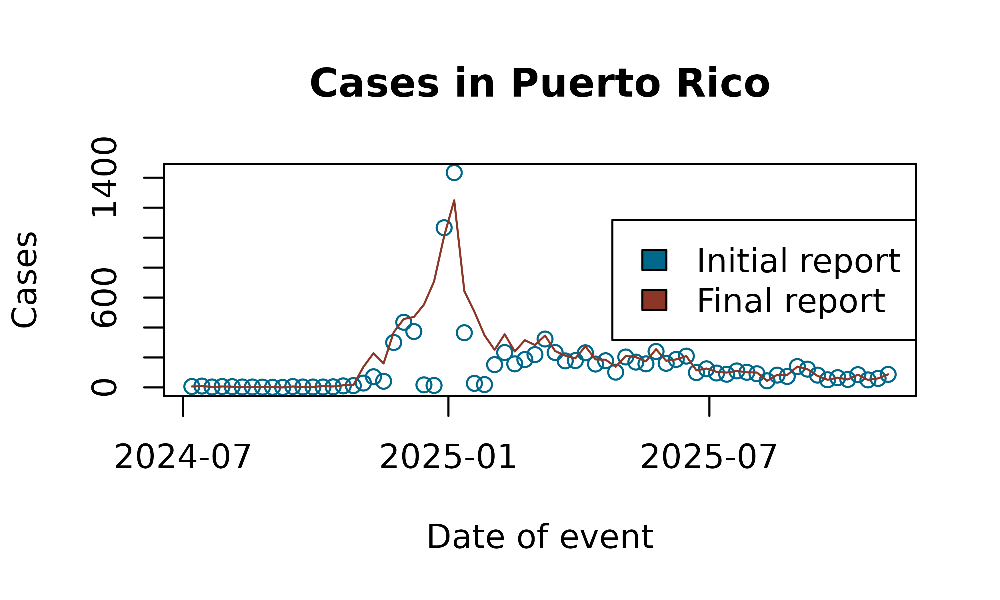

Example analysis with Flusight
Example.RmdIn this vignette we demonstrate how to use the tbl.now
framework with real data from the U.S. Centers for Disease Control and
Prevention (CDC). Specifically, we work with the Flusight dataset, which
contains weekly counts of hospital admissions for laboratory-confirmed
influenza.
We begin by loading the required packages:
Data
The Flusight dataset (?flusight) includes weekly
influenza hospital admission counts. For each epidemiological week
(target_end_date), the CDC publishes revised counts across
multiple future weeks (as_of). Thus, each event week is
associated with multiple reporting dates reflecting updates or
revisions.
data(flusight)| as_of | target_end_date | location_name | observation |
|---|---|---|---|
| 2023-09-23 | 2022-02-12 | Alabama | 10 |
| 2023-09-23 | 2022-02-19 | Alabama | 22 |
| 2023-09-23 | 2022-02-26 | Alabama | 13 |
| 2023-09-23 | 2022-03-05 | Alabama | 31 |
| 2023-09-23 | 2022-03-12 | Alabama | 36 |
| 2023-09-23 | 2022-03-19 | Alabama | 27 |
| 2023-09-23 | 2022-03-26 | Alabama | 27 |
| 2023-09-23 | 2022-04-02 | Alabama | 32 |
| 2023-09-23 | 2022-04-09 | Alabama | 28 |
| 2023-09-23 | 2022-04-16 | Alabama | 19 |
The columns are:
target_end_date: the epidemiological week when cases occurredas_of: the week in which the CDC updated its estimate for that event weeklocation_name: the state or territoryobservation: the reported number of cases for target_end_date as of as_of
The key feature of this dataset is that observation is cumulative:
the value for a given target_end_date and
as_of is the latest estimate of total cases up to that
event week, not the incremental update for that reporting date. The
following example illustrates the structure:
flusight %>%
filter(location_name == "Puerto Rico" & target_end_date == ymd("2025/04/12"))
#> # A tibble: 19 × 4
#> as_of target_end_date location_name observation
#> <date> <date> <chr> <dbl>
#> 1 2025-04-12 2025-04-12 Puerto Rico 231
#> 2 2025-04-19 2025-04-12 Puerto Rico 231
#> 3 2025-04-26 2025-04-12 Puerto Rico 231
#> 4 2025-05-03 2025-04-12 Puerto Rico 261
#> 5 2025-05-10 2025-04-12 Puerto Rico 261
#> 6 2025-05-17 2025-04-12 Puerto Rico 261
#> 7 2025-05-24 2025-04-12 Puerto Rico 261
#> 8 2025-05-31 2025-04-12 Puerto Rico 261
#> 9 2025-06-07 2025-04-12 Puerto Rico 261
#> 10 2025-06-28 2025-04-12 Puerto Rico 273
#> 11 2025-07-05 2025-04-12 Puerto Rico 273
#> 12 2025-07-23 2025-04-12 Puerto Rico 273
#> 13 2025-09-03 2025-04-12 Puerto Rico 273
#> 14 2025-09-03 2025-04-12 Puerto Rico 273
#> 15 2025-09-03 2025-04-12 Puerto Rico 273
#> 16 2025-09-03 2025-04-12 Puerto Rico 273
#> 17 2025-09-24 2025-04-12 Puerto Rico 273
#> 18 2025-09-24 2025-04-12 Puerto Rico 273
#> 19 2025-11-12 2025-04-12 Puerto Rico 274Each unique pair of (target_end_date,
as_of) therefore corresponds to a cumulative estimate.
Creating the tbl_now
Creating the tbl_now Object
To construct a tbl_now object, we must indicate:
event_date: the date on which cases occurredreport_date: the date on which the estimate was releasedcase_count: the column containing case countsstrata: grouping variables that define separate strata (e.g., states)
A first attempt produces several warnings:
df_wrong <- flusight %>%
tbl_now(event_date = target_end_date,
report_date = as_of,
case_count = observation,
strata = location_name)
#> Warning: Cannot accurately infer the data-type when rows are repeated across event and
#> report dates
#> Warning: Some observations in the count column "observation"
#> contain missing values.
#> ℹ Identified data as <count-incidence> with counts in column "observation".
#> Warning: *Non-unique*: Data has multiple rows for the same event (target_end_date) and
#> report(as_of) dates. Consider using `to_count()` to aggregate the data
#> or`distinct()` to remove repeated observations.These warnings arise because:
Duplicate rows exist for some event–report combinations.
Missing values appear in the case count column.
The data is incorrectly inferred to represent count-incidence rather than count-cumulative, because cumulative-type datasets often contain repeated records.
Inspecting a subset confirms duplicated rows:
flusight[c(422146, 422147, 422148, 422149), ]
#> # A tibble: 4 × 4
#> as_of target_end_date location_name observation
#> <date> <date> <chr> <dbl>
#> 1 2025-09-03 2022-02-05 Alabama 5
#> 2 2025-09-03 2022-02-05 Alabama 5
#> 3 2025-09-03 2022-02-05 Alabama 5
#> 4 2025-09-03 2022-02-05 Alabama 5Using `dplyr’s distinct() we remove the duplicates:
Next, we remove observations with missing case counts:
However, reconstructing the object still yields a misclassified data type:
df_still_wrong <- tbl_now(flusight, event_date = "target_end_date", report_date = "as_of",
case_count = "observation", strata = c("location_name"))
#> ℹ Identified data as <count-incidence> with counts in column "observation".The function incorrectly infers incidence data (i.e., each row represents the incremental number reported on that report date). In contrast, the Flusight dataset contains cumulative values. We therefore explicitly declare the data type:
df_flu <- tbl_now(flusight, event_date = "target_end_date", report_date = "as_of",
case_count = "observation", strata = c("location_name"), data_type = "count-cumulative")This yields a correctly structured tbl_now object:
df_flu
#> # A tibble: 451,415 × 7
#> # Data type: "count-cumulative"
#> # Frequency: Event: `weeks` | Report: `weeks`
#> as_of target_end_date location_name observation .event_num .report_num
#> <date> <date> <chr> <dbl> <dbl> <dbl>
#> [report_dat… [event_date] [strata] [cases] [...] [...]
#> 1 2023-09-23 2022-02-12 Alabama 10 1 85
#> 2 2023-09-23 2022-02-12 Alaska 0 1 85
#> 3 2023-09-23 2022-02-12 Arizona 64 1 85
#> 4 2023-09-23 2022-02-12 Arkansas 29 1 85
#> 5 2023-09-23 2022-02-12 California 36 1 85
#> 6 2023-09-23 2022-02-12 Colorado 29 1 85
#> 7 2023-09-23 2022-02-12 Connecticut 0 1 85
#> 8 2023-09-23 2022-02-12 Delaware 2 1 85
#> 9 2023-09-23 2022-02-12 District of … 0 1 85
#> 10 2023-09-23 2022-02-12 Florida 68 1 85
#> # ────────────────────────────────────────────────────────────────────────────────
#> # Now: 2025-11-12 | Event date: "target_end_date" | Report date: "as_of"
#> # Strata: "location_name"
#> # ────────────────────────────────────────────────────────────────────────────────
#> # ℹ 451,405 more rows
#> # ℹ 1 more variable: .delay <dbl>Aligining weeks
There is however a last caveat. The as_of day of the
week is sometimes registered a Wednesday and sometimes its a Saturday.
This results in some .delays that include decimal
components:
df_flu$.delay %>% unique()
#> [1] 84.0000000 83.0000000 82.0000000 81.0000000 80.0000000 79.0000000
#> [7] 78.0000000 77.0000000 76.0000000 75.0000000 74.0000000 73.0000000
#> [13] 72.0000000 71.0000000 70.0000000 69.0000000 68.0000000 67.0000000
#> [19] 66.0000000 65.0000000 64.0000000 63.0000000 62.0000000 61.0000000
#> [25] 60.0000000 59.0000000 58.0000000 57.0000000 56.0000000 55.0000000
#> [31] 54.0000000 53.0000000 52.0000000 51.0000000 50.0000000 49.0000000
#> [37] 48.0000000 47.0000000 46.0000000 45.0000000 44.0000000 43.0000000
#> [43] 42.0000000 41.0000000 40.0000000 39.0000000 38.0000000 37.0000000
#> [49] 36.0000000 35.0000000 34.0000000 33.0000000 32.0000000 31.0000000
#> [55] 30.0000000 29.0000000 28.0000000 27.0000000 26.0000000 25.0000000
#> [61] 24.0000000 23.0000000 22.0000000 21.0000000 20.0000000 19.0000000
#> [67] 18.0000000 17.0000000 16.0000000 15.0000000 14.0000000 13.0000000
#> [73] 12.0000000 11.0000000 10.0000000 9.0000000 8.0000000 7.0000000
#> [79] 6.0000000 5.0000000 4.0000000 3.0000000 2.0000000 1.0000000
#> [85] 0.0000000 85.0000000 86.0000000 87.0000000 88.0000000 89.0000000
#> [91] 90.0000000 91.0000000 92.0000000 93.0000000 94.0000000 95.0000000
#> [97] 96.0000000 97.0000000 98.0000000 99.0000000 100.0000000 101.0000000
#> [103] 102.0000000 103.0000000 104.0000000 105.0000000 106.0000000 107.0000000
#> [109] 108.0000000 109.0000000 110.0000000 111.0000000 112.0000000 113.0000000
#> [115] 114.0000000 115.0000000 145.0000000 144.0000000 143.0000000 142.0000000
#> [121] 141.0000000 140.0000000 139.0000000 138.0000000 137.0000000 136.0000000
#> [127] 135.0000000 134.0000000 133.0000000 132.0000000 131.0000000 130.0000000
#> [133] 129.0000000 128.0000000 127.0000000 126.0000000 125.0000000 124.0000000
#> [139] 123.0000000 122.0000000 121.0000000 120.0000000 119.0000000 118.0000000
#> [145] 117.0000000 116.0000000 147.0000000 146.0000000 149.0000000 148.0000000
#> [151] 150.0000000 151.0000000 153.0000000 152.0000000 155.0000000 154.0000000
#> [157] 156.0000000 157.0000000 158.0000000 159.0000000 160.0000000 161.0000000
#> [163] 162.0000000 163.0000000 164.0000000 165.0000000 166.0000000 167.0000000
#> [169] 168.0000000 169.0000000 170.0000000 171.0000000 172.0000000 173.0000000
#> [175] 174.0000000 177.0000000 176.0000000 175.0000000 178.0000000 180.5714286
#> [181] 179.5714286 178.5714286 177.5714286 176.5714286 175.5714286 174.5714286
#> [187] 173.5714286 172.5714286 171.5714286 170.5714286 169.5714286 168.5714286
#> [193] 167.5714286 166.5714286 165.5714286 164.5714286 163.5714286 162.5714286
#> [199] 161.5714286 160.5714286 159.5714286 158.5714286 157.5714286 156.5714286
#> [205] 155.5714286 154.5714286 153.5714286 152.5714286 151.5714286 150.5714286
#> [211] 149.5714286 148.5714286 147.5714286 146.5714286 145.5714286 144.5714286
#> [217] 143.5714286 142.5714286 141.5714286 140.5714286 139.5714286 138.5714286
#> [223] 137.5714286 136.5714286 135.5714286 134.5714286 133.5714286 132.5714286
#> [229] 131.5714286 130.5714286 129.5714286 128.5714286 127.5714286 126.5714286
#> [235] 125.5714286 124.5714286 123.5714286 122.5714286 121.5714286 120.5714286
#> [241] 119.5714286 118.5714286 117.5714286 116.5714286 115.5714286 114.5714286
#> [247] 113.5714286 112.5714286 111.5714286 110.5714286 109.5714286 108.5714286
#> [253] 107.5714286 106.5714286 105.5714286 104.5714286 103.5714286 102.5714286
#> [259] 101.5714286 100.5714286 99.5714286 98.5714286 97.5714286 96.5714286
#> [265] 95.5714286 94.5714286 93.5714286 92.5714286 91.5714286 90.5714286
#> [271] 89.5714286 88.5714286 87.5714286 86.5714286 85.5714286 84.5714286
#> [277] 83.5714286 82.5714286 81.5714286 80.5714286 79.5714286 78.5714286
#> [283] 77.5714286 76.5714286 75.5714286 74.5714286 73.5714286 72.5714286
#> [289] 71.5714286 70.5714286 69.5714286 68.5714286 67.5714286 66.5714286
#> [295] 65.5714286 64.5714286 63.5714286 62.5714286 61.5714286 60.5714286
#> [301] 59.5714286 58.5714286 57.5714286 56.5714286 55.5714286 54.5714286
#> [307] 53.5714286 52.5714286 51.5714286 50.5714286 49.5714286 48.5714286
#> [313] 47.5714286 46.5714286 45.5714286 44.5714286 43.5714286 42.5714286
#> [319] 41.5714286 40.5714286 39.5714286 38.5714286 37.5714286 36.5714286
#> [325] 35.5714286 34.5714286 33.5714286 32.5714286 31.5714286 30.5714286
#> [331] 29.5714286 28.5714286 27.5714286 26.5714286 25.5714286 24.5714286
#> [337] 23.5714286 22.5714286 21.5714286 20.5714286 19.5714286 18.5714286
#> [343] 17.5714286 16.5714286 15.5714286 14.5714286 13.5714286 12.5714286
#> [349] 11.5714286 10.5714286 9.5714286 8.5714286 7.5714286 6.5714286
#> [355] 5.5714286 4.5714286 3.5714286 2.5714286 1.5714286 0.5714286
#> [361] 186.5714286 185.5714286 184.5714286 183.5714286 182.5714286 181.5714286
#> [367] 189.5714286 188.5714286 187.5714286 196.5714286 195.5714286 194.5714286
#> [373] 193.5714286 192.5714286 191.5714286 190.5714286In order to remove these decimals which don’t work for all nowcasting
models, we can align both report and event dates so that they all happen
on Sundays. This is done with the align_weeks()
function:
df_flu <- df_flu %>%
align_weeks()And results in integer delays:
df_flu$.delay %>% unique()
#> [1] 84 83 82 81 80 79 78 77 76 75 74 73 72 71 70 69 68 67
#> [19] 66 65 64 63 62 61 60 59 58 57 56 55 54 53 52 51 50 49
#> [37] 48 47 46 45 44 43 42 41 40 39 38 37 36 35 34 33 32 31
#> [55] 30 29 28 27 26 25 24 23 22 21 20 19 18 17 16 15 14 13
#> [73] 12 11 10 9 8 7 6 5 4 3 2 1 0 85 86 87 88 89
#> [91] 90 91 92 93 94 95 96 97 98 99 100 101 102 103 104 105 106 107
#> [109] 108 109 110 111 112 113 114 115 145 144 143 142 141 140 139 138 137 136
#> [127] 135 134 133 132 131 130 129 128 127 126 125 124 123 122 121 120 119 118
#> [145] 117 116 147 146 149 148 150 151 153 152 155 154 156 157 158 159 160 161
#> [163] 162 163 164 165 166 167 168 169 170 171 172 173 174 177 176 175 178 181
#> [181] 180 179 187 186 185 184 183 182 190 189 188 197 196 195 194 193 192 191Working with the tbl_now Object
tbl_now objects are fully compatible with
dplyr verbs. For example, we may focus on Puerto Rico and
observations after mid–2024:
df_pr <- df_flu %>%
rename(latest_report = as_of) %>%
filter(location_name == "Puerto Rico") %>%
filter(target_end_date >= ymd("2024/07/01"))
df_pr
#> # A tibble: 1,259 × 7
#> # Data type: "count-cumulative"
#> # Frequency: Event: `weeks` | Report: `weeks`
#> location_name observation target_end_date latest_report .event_num
#> <chr> <dbl> <date> <date> <dbl>
#> [strata] [cases] [event_date] [report_date] [...]
#> 1 Puerto Rico 6 2024-07-07 2024-11-10 127
#> 2 Puerto Rico 9 2024-07-14 2024-11-10 128
#> 3 Puerto Rico 3 2024-07-21 2024-11-10 129
#> 4 Puerto Rico 6 2024-07-28 2024-11-10 130
#> 5 Puerto Rico 5 2024-08-04 2024-11-10 131
#> 6 Puerto Rico 3 2024-08-11 2024-11-10 132
#> 7 Puerto Rico 3 2024-08-18 2024-11-10 133
#> 8 Puerto Rico 2 2024-08-25 2024-11-10 134
#> 9 Puerto Rico 1 2024-09-01 2024-11-10 135
#> 10 Puerto Rico 0 2024-09-08 2024-11-10 136
#> # ────────────────────────────────────────────────────────────────────────────────
#> # Now: 2025-11-09 | Event date: "target_end_date" | Report date: "latest_report"
#> # Strata: "location_name"
#> # ────────────────────────────────────────────────────────────────────────────────
#> # ℹ 1,249 more rows
#> # ℹ 2 more variables: .report_num <dbl>, .delay <dbl>Because we are now working with a single geographic unit, the
location_name variable is no longer meaningful as a
stratum. We remove it from the strata definition (without removing the
column itself):
df_pr <- df_pr %>%
remove_strata("location_name")
df_pr
#> # A tibble: 1,259 × 7
#> # Data type: "count-cumulative"
#> # Frequency: Event: `weeks` | Report: `weeks`
#> location_name observation target_end_date latest_report .event_num
#> <chr> <dbl> <date> <date> <dbl>
#> [...] [cases] [event_date] [report_date] [...]
#> 1 Puerto Rico 6 2024-07-07 2024-11-10 127
#> 2 Puerto Rico 9 2024-07-14 2024-11-10 128
#> 3 Puerto Rico 3 2024-07-21 2024-11-10 129
#> 4 Puerto Rico 6 2024-07-28 2024-11-10 130
#> 5 Puerto Rico 5 2024-08-04 2024-11-10 131
#> 6 Puerto Rico 3 2024-08-11 2024-11-10 132
#> 7 Puerto Rico 3 2024-08-18 2024-11-10 133
#> 8 Puerto Rico 2 2024-08-25 2024-11-10 134
#> 9 Puerto Rico 1 2024-09-01 2024-11-10 135
#> 10 Puerto Rico 0 2024-09-08 2024-11-10 136
#> # ────────────────────────────────────────────────────────────────────────────────
#> # Now: 2025-11-09 | Event date: "target_end_date" | Report date: "latest_report"
#> # ────────────────────────────────────────────────────────────────────────────────
#> # ℹ 1,249 more rows
#> # ℹ 2 more variables: .report_num <dbl>, .delay <dbl>The now (the effective horizon for the nowcast) is:
get_now(df_pr)
#> [1] "2025-11-09"Changing the “now” for Historical Backtesting
To perform retrospective analyses (backtesting), we can filter the dataset and explicitly set a historical reporting cutoff:
df_pr_new_now <- df_pr %>%
filter(latest_report < ymd("2023/12/01")) %>%
change_now(ymd("2023/12/01"))
df_pr_new_now
#> # A tibble: 0 × 7
#> # Data type: "count-cumulative"
#> # Frequency: Event: `weeks` | Report: `weeks`
#> # ────────────────────────────────────────────────────────────────────────────────
#> # Now: 2025-11-09 | Event date: "target_end_date" | Report date: "latest_report"
#> # ────────────────────────────────────────────────────────────────────────────────
#> # ℹ 7 variables: location_name <chr>, observation <dbl>,
#> # target_end_date <date>, latest_report <date>, .event_num <dbl>,
#> # .report_num <dbl>, .delay <dbl>The new now is:
get_now(df_pr_new_now)
#> [1] "2025-11-09"Working with Initial and Latest Reports
Two helper functions extract initial and final reported values for each event date:
get_initial_reported_cases(): the earliest available report for each eventget_latest_reported_cases(): the most recent report relative to now
A simple plot highlights the differences between initial and final estimates:
initial_reports <- get_initial_reported_cases(df_pr)
latest_reports <- get_latest_reported_cases(df_pr)A simple plot highlights the differences between initial and final estimates:
plot(initial_reports$target_end_date, initial_reports$observation,
type = "p", col = "deepskyblue4",
xlab = "Date of event", ylab = "Cases",
main = "Cases in Puerto Rico")
lines(latest_reports$target_end_date, latest_reports$observation,
col = "tomato4")
legend("right", legend = c("Initial report", "Final report"),
fill = c("deepskyblue4", "tomato4"))